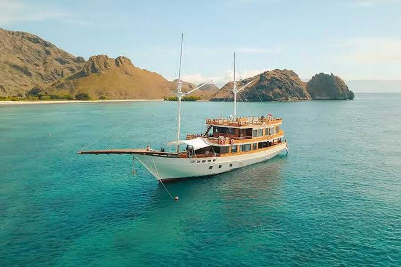
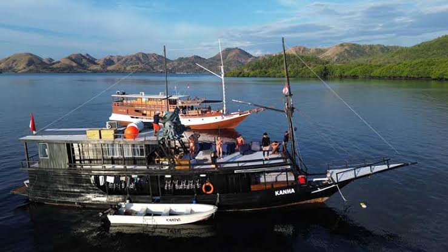
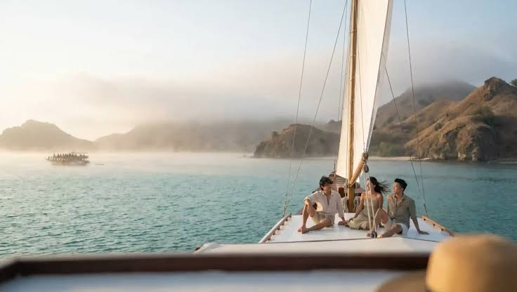
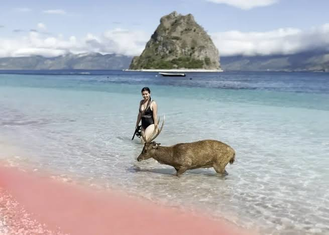

Fitur 05
Direktori Operator Terverifikasi
Semua operator diverifikasi izin usahanya sebelum tampil di Bajoverse.

✓ TerverifikasiKomodo Explorer
★★★★★ 4.9 (312)
Kapal harian, kapasitas 12 orang, snorkeling + trekking Padar.
Rp 850rb/ orang / hari
Pilih
 ✓ Terverifikasi
✓ Terverifikasi
Flores Sailing Co.
★★★★★ 4.8 (204)
Liveaboard 2D1N, rute Komodo–Padar–Pink Beach.
Rp 2.1jt/ orang / trip
Pilih

✓ Terverifikasi
✓ TerverifikasiBajo Liveaboard
★★★★★ 4.9 (401)
Liveaboard premium 3D2N, termasuk diving 2 titik.
Rp 4.5jt/ orang / trip
Pilih

✓ TerverifikasiPink Sail Tours
★★★★☆ 4.6 (98)
Kapal harian fokus Pink Beach & Kelor, cocok keluarga.
Rp 700rb/ orang / hari
Pilih
✓ Terverifikasi
Wae Rebo Trekking
★★★★★ 4.9 (77)
Trekking budaya ke desa adat Wae Rebo, 1D1N.
Rp 950rb/ orang / trip
Pilih